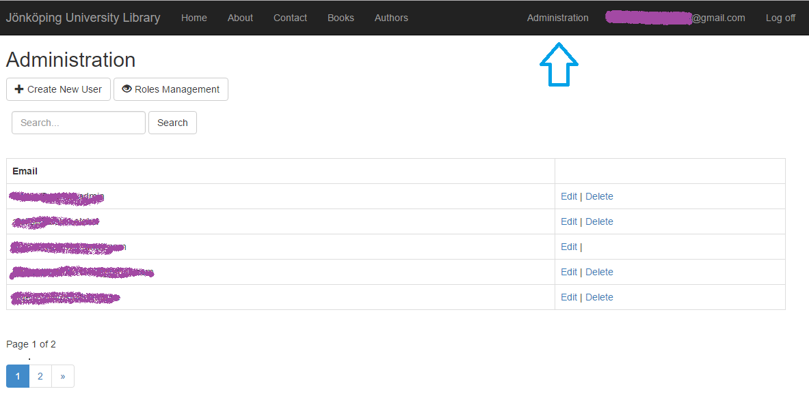
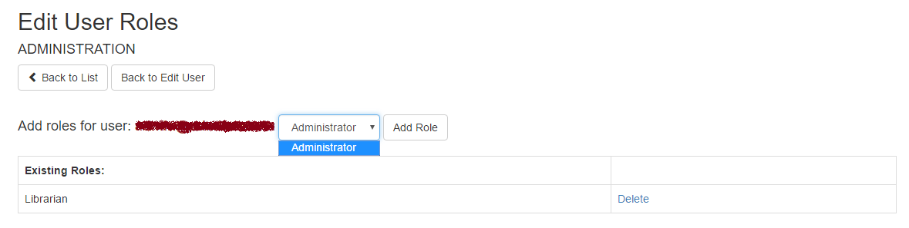

Content
- Introduction
- User guide
- Librarian guide
- Administrators
Introduction
Short guide about different types of users and their abilities
New users can easily
- Register, or
- Use external provider to Log in (Facebook)
Users are able to
- Browse Books and Authors
- Sort by different cases
- Search Books and Authors
- View detailed information about Book or Author
Librarians are responsible and able to
- Create new Book/Author record
- Delete records
- Update existing Book or Author
As the name suggest,
Administrators are able to
- Manage user roles
- Recovery user passwords
- Delete members
- Create users
Administration panel
Administration panel is accessible from navigation bar

Manage user roles
Administration -> Edit (user) -> Edit User Roles
